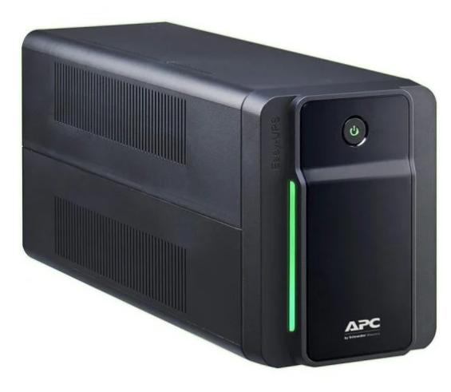

Soporte
Soporte
Soporte informático
Atendemos los problemas de los clientes y hacemos asesorías para la infraestructura y la red de la empresa.
KILOBYTE S.L. es una empresa informática que ayuda a otras empresas a crecer con la tecnología, ofreciendo servicios informáticos.
Las empresas necesitan tecnología que funcione: equipos que no fallen, redes seguras y alguien que responda cuando algo va mal. En KILOBYTE S.L. nos ocupamos de todo eso para que cada negocio pueda centrarse en lo suyo.
Trabajamos en tres frentes:
Soporte
Atendemos los problemas de los clientes y hacemos asesorías para la infraestructura y la red de la empresa.
 Seguridad
Seguridad
Protegemos la red y los datos de la empresa.
 Equipos
Equipos
Ofrecemos el equipamiento que necesitan.
Que todo siga funcionando: una infraestructura pensada para la continuidad del servicio.
 Web
Web
Aloja la página web y el chatbot de la empresa.
 Datos
Datos
Guarda la base de datos de la empresa (motor MySQL/MariaDB), organizada en 8 tablas y gestionada con el cliente HeidiSQL.
 Virtualización
Virtualización
Los servidores se crean en un entorno virtual, más flexible y seguro.

SAINuestra disponibilidad está asegurada con sistemas de alimentación ininterrumpida.

Los principios que guían cada servicio que ofrecemos.
Cercanía
Cuando algo falla, cada hora cuenta. Respondemos rápido y te lo explicamos sin tecnicismos, para que siempre sepas qué está pasando con tu equipo o tu red.
A medida
No hay dos empresas iguales. Analizamos tu caso y proponemos lo que realmente necesitas: ni servidores sobredimensionados, ni protecciones de más que encarecen el proyecto.
 Seguridad
Seguridad
La protección no se añade al final: firewall, copias de seguridad y control de accesos se configuran el primer día en cada proyecto que entregamos.
Un equipo pequeño con perfiles complementarios para cubrir todo el ciclo: soporte, seguridad, servidores y desarrollo web.
Soporte
El primer punto de contacto. Atiende las incidencias por teléfono y teleasistencia, resuelve lo cotidiano y escala lo que necesita intervención en tu oficina.
Sistemas
Instala y mantiene el software DF Server, los dominios, la virtualización y los SAIs. Es quien monta la infraestructura que sostiene tu negocio.
Desarrollo
Desarrolla y mantiene esta web, el chatbot y las integraciones en la nube (Firebase). Conecta la tecnología con lo que tu cliente ve.
Hablemos y prepárate para pasar de KB a GB.